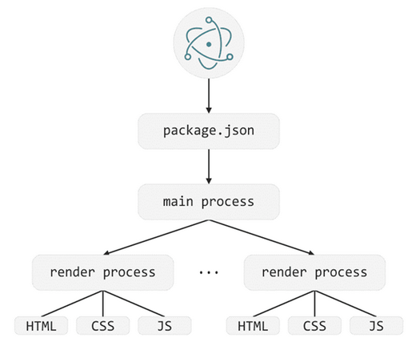

Electron
powered by Andrei Tsylko
Electron
- Open source library
- Cross-platform
- Chromium and Node.js
Apps build on Electron
Why Electron
- Application can work offline
- Access to the file system
- Access to the devices by using USB
- Application can be more user friendly
User friendly

Electron limitations
- Windows 7 + *
- Ubuntu 12.04 +
- macOS 10.09 +
Windows XP version - https://github.com/jetiny/electron-xp
Main parts of Electron
How an Electron app works
Communication between two processes
Code example
Hello world app
Code example
Packaging Electron app
Packaging Electron app
- npm install electron-builder --save
E.g. windows build can be created on Windows PC.
Storing Data
FileSystem
Local Storage
IndexedDB (NOSQL)
Advantages
Cross - platform app
JavaScript, CSS, HTML
Chrome Devtools
Disadvantages

Disadvantages
Application size 100Mb+